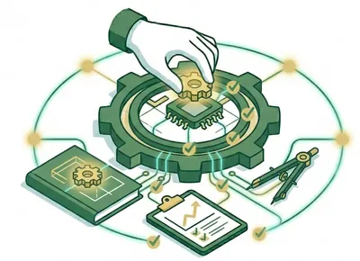
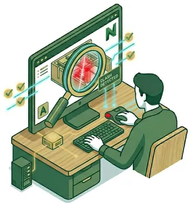
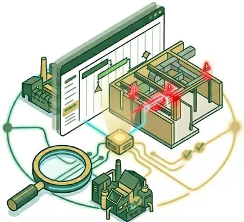
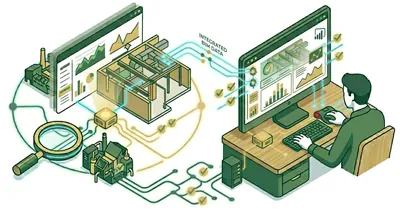

Implante BIM com método, não com tentativa e erro
Antes de desenvolver software, a P-LAB nasceu na consultoria BIM. Ajudamos escritórios a estruturar gestão, coordenação e qualidade — da diretriz à auditoria.
Falar com um consultorGestão e Cultura BIM

Implementação e Diretrizes
Criação de documentação estratégica (PEB/BEP e BIM Mandate) e desenvolvimento de Templates BIM no Revit.
Cultura e Capacitação
Garantia da cultura BIM na companhia através de suporte técnico contínuo e treinamento em fluxos Revit e AutoCAD.
Gestão de Stakeholders
Rotinas periódicas de alinhamento e relatórios de progresso para stakeholders.
Coordenação e Engenharia Digital
Coordenação Multidisciplinar
Integração de modelos multidisciplinares em ambiente federado usando Navisworks.
Gerenciamento de CDE
Gestão do ambiente comum de dados (Autodesk Construction Cloud), controlando acessos e fluxos.
Planejamento e Custos (4D/5D)
Integração do modelo com cronogramas e orçamentos para análise de construtividade.
Inovação e Auditoria de Qualidade

Auditoria e Clash Detection
Processos rigorosos de compatibilização no Navisworks para garantir modelos limpos.

Integração de Sistemas
Conexão entre o modelo digital e sistemas corporativos (ERP/EPPM) para automação de processos.

Dashboards e BI
Visualização de indicadores de performance através de Dashboards no Power BI integrados aos dados do modelo.
Pronto para estruturar o BIM do seu escritório?
Conte seu cenário atual e desenhamos um plano de implantação sob medida.
Solicitar diagnóstico